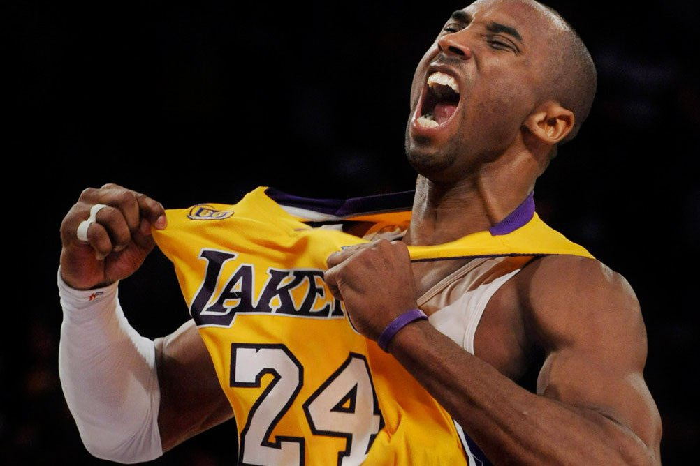
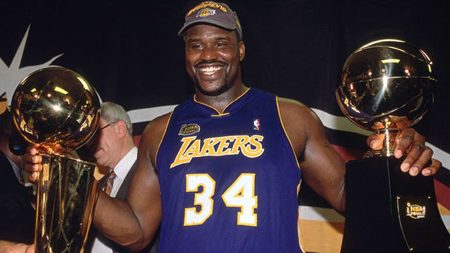

| Kobe Bryant |  | Shaquille Rashaun O'Neal |  |
| Kobe Bryant | 生於美國費城，前NBA職業籃球運動員，綽號「小飛俠」、「黑曼巴」。
身高6英尺6英寸（198公分），體重212磅，主打位置為得分後衛。 1996年首次在NBA出賽，2016年球季結束後退休。 並取得5次總冠軍，2次總決賽最有價值球員，1次年度最有價值球員， 2次得分王。另外11次入選NBA最佳陣容，18次入選全明星賽， 以及2屆奧運會金牌。 |
Shaquille Rashaun O'Neal | 暱稱查克·歐尼爾（Shaq O'Neal又譯俠克·歐尼爾）、鯊魚（Shaq）與「柴油機」（Diesel）。
職業生涯中先後效力於魔術、湖人、熱火、太陽、騎士和塞爾提克， 被普遍認為是聯盟歷史中最偉大的長人中鋒球員之一。 禁區的進攻主宰能力特強，善用他的身軀做出極致的進攻與防守， 其灌籃的震撼力強悍，甚至出現好幾次球框毀損的場面。 2016年4月4日，NBA官方正式宣布入選籃球名人堂。 |